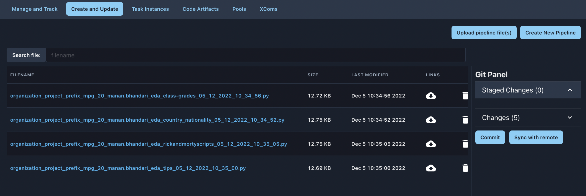
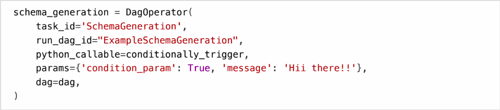
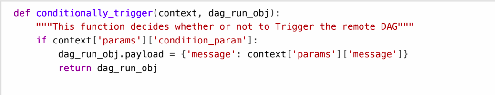
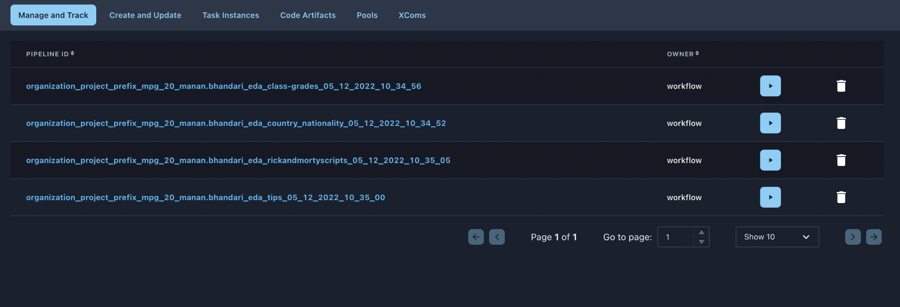
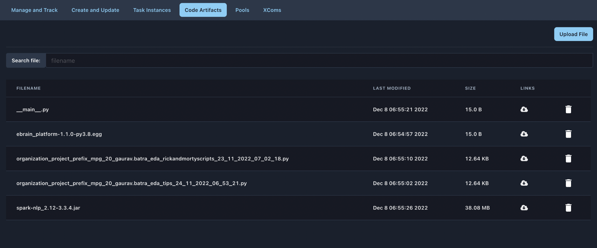
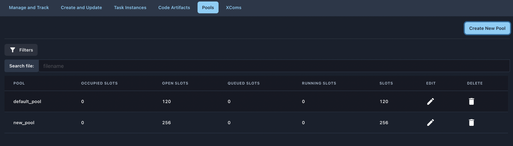
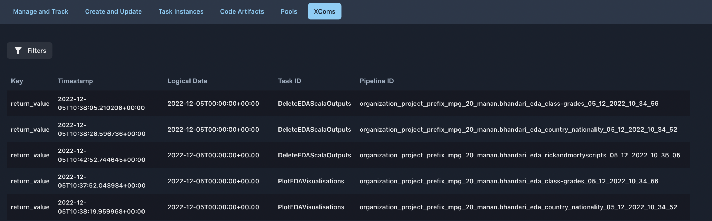

Pipelines#
What is a Pipeline?#
{kind=link}
A pipeline is defined in a Python script, which represents its structure (tasks and their dependencies) as code. Pipeline tasks are created by instantiating as operator class. There are different types of operators available. Pipelines are defined in standard Python files that are placed in the backend of our platform. DSCW Platform will execute the code in each file to dynamically build the pipeline objects. You can have as many pipelines as you want, each describing an arbitrary number of tasks. In general, each one should correspond to a single logical workflow.
Features and Functionalities#
Create and Update#
This is where a developer can create Pipelines, or upload existing Pipelines from local storage for that specific project.

{kind=link}
- Just enter your Pipeline name after a click on “Create New Pipeline”
and get on with the code. For coding a pipeline, please refer to the section Pipelines Developer Reference for additional details.
- The “Git Panel” on the right provides for the git integration and all
the changes can be pushed to github from the git panel itself.
- You can also add custom code bricks by visiting the codebricks
repository and inserting the required code from the DSCW developer UI.
- New snippets can also be added by the “Add a new codebrick” option.
Please note that the title entered here appears in the list.
- Review your code and save it. Go back to the Pipeline feature on the
platform to see your new Pipeline in the table. From the table, code can be downloaded in the local machine and the pipeline can be deleted.
Linking Pipelines: An object should be instantiated from PipelineOperator. The first argument task_id acts as a unique identifier for the task.
Conditionally triggering a Pipeline: A condition can be set as to whether or not to trigger the remote Pipeline, by defining a python function as below:

{kind=link}
{kind=link}
Manage and Track#
A list of Pipelines created for that specific project are displayed in this tab for your environment. You can see at a glance the exact number of successful, unsuccessful, or in-progress tasks. One can trigger or delete a pipeline from the table as shown in the figure below.
Platform provides multiple visualization features that can help any user to analyze the statistics related to that particular pipeline by clicking on any of the pipelines listed in the table. The visualizations include graph, task tries, task duration etc. for that pipeline.
Graph : The graph is probably the most comprehensive as it renders real-time status of all the tasks of that pipeline for a particular run. Multiple functionalities can be implemented by clicking on any of the task boxes in the graph to retrigger the run in the desired way.
Details : This tab just shows the basic details of the pipeline including pipeline id, file location etc.
Code : Transparency is everything. While the code for your pipeline is in source control, this is a quick way to get to the code that generates the Pipeline and provides yet more context.
Task Tries : This view lets you find the number of times any task has been run over the past N runs. (N can be selected from a dropdown provided in this tab) Number of times a task is executed in a particular run
Task Duration : The duration of your different tasks over the past N runs. This view lets you find outliers and quickly understand where the time is spent in your Pipeline over many runs. (N can be selected from a dropdown provided in this tab)
Landing Times : The number of hours after the time the scheduling period ended for the task, in which the task completed its execution. Mathematically, it is (endtime-scheduledtime) of that task
Gantt : This view helps to analyze task duration and overlaps and quickly identify bottlenecks and where the bulk of the time is spent for specific pipeline runs.
Calendar : This view gives an overview of the entire pipeline’s history over months, or even years, letting quickly see trends of the overall success/failure rate of runs over time.
{kind=link}
Runs#
Pipeline Runs is an object representing an instantiation of the Pipeline in time. Any time the pipeline is executed, a Pipeline Run is created and all tasks inside it are executed. The status of the Pipeline Run depends on the tasks states. Each Run is run separately from one another, meaning that you can have many runs of a particular pipeline at the same time. This page will list down all the runs of all the pipelines of that specific project.
Task Instances#
From the pages seen above (graph view, gantt chart etc.), it is always possible to click on a task instance, and get to this rich context menu that can take you to more detailed metadata, and perform some actions. This page displays the list of all the tasks (along with their status) of all the pipeline runs of all the pipelines for that specific project.
Pipeline Dependencies#
For all the pipelines that are part of the project, pipeline dependencies help one understand the dependencies between the pipelines and plots a graph for that. The graph can easily be understood based on the edges and nodes depicting the dependencies. For example : if pipeline A is a part of pipeline B, then we say that B is dependent on A (which will be shown in the graph where node B will be connected to node A.
Code Artifacts#
They are used to run predefined use cases. Use them by invoking the existing code artifacts in pipeline code. Example : To upload artifacts i.e., either your jar code for spark jobs or python files for py-spark jobs.

{kind=link}
Pools#
Some systems can get overwhelmed when too many processes hit them at the same time. Pools can be used to limit the execution parallelism on arbitrary sets of tasks. The list of pools is managed in the UI by giving the pools a name and assigning it a number of worker slots.
Tasks can then be associated with one of the existing pools by using the pool parameter when creating tasks.
Note : Pools are not project specific in the platform.

{kind=link}
Xcoms#
XComs lets tasks exchange messages, allowing more nuanced forms of control and shared state. The name is an abbreviation of “cross-communication”. Any object that can be pickled can be used as an XCom value.
XComs can be pushed (sent) or pulled (received). When a task pushes an XCom, it makes it generally available to other tasks. Tasks call xcom_pull() to retrieve XComs, optionally applying filters based on criteria like a key, source task_ids, and source Pipeline_id. If xcom_pull is passed a single string for task_ids, then the most recent XCom value from that task is returned; if a list of task_ids is passed, then a corresponding list of XCom values is returned. If you set provide_context=True, the returned value of the function is pushed into XCOM which in itself is nothing but a DB table.
Note : XComs are similar to Variables, but are specifically designed for inter-task communication rather than global settings.

{kind=link}